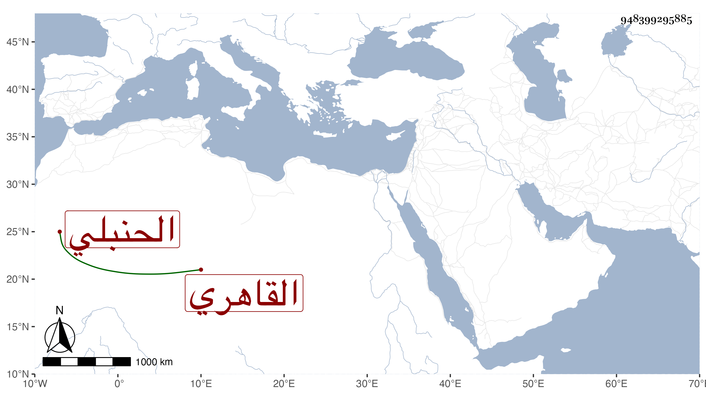

0902Sakhawi.DawLamic.ITO20230111-ara1.EIS1600.948399295885
Biography ID: 948399295885
907
محمد بن إبراهيم بن علي الشمس بن البرهان القاهري الحنبلي ويعرف بابن الصواف . ممن اشتغل قليلا وتكسب بالشهادة بحانوت باب الفتوح رفيقا لعبد الغني بن الأعمى الماضي وغيره وولي العقود . مات قريبا من سنة خمسين بعد أن أسند وصيته للبدر البغدادي الحنبلي ووجد له من النقد نحو مائتي ألف مع كونه نائما على قش القصب عفا الله عنه .
